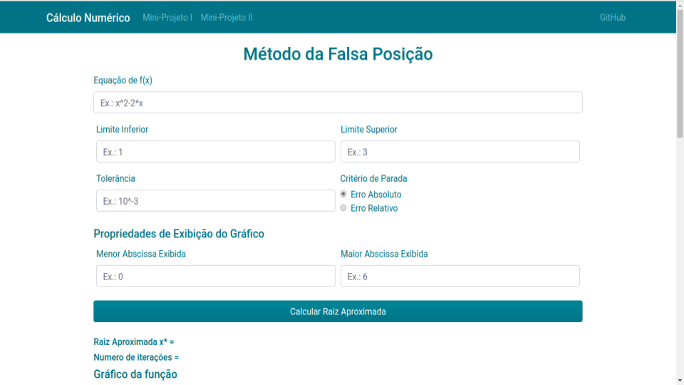
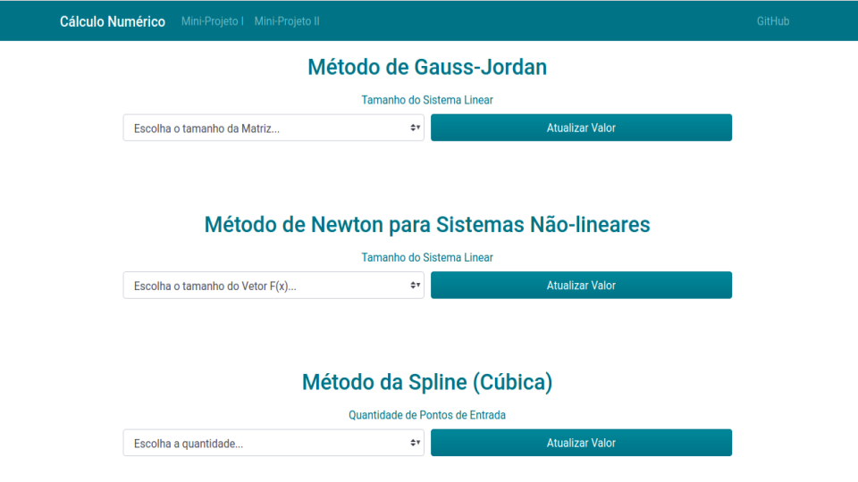
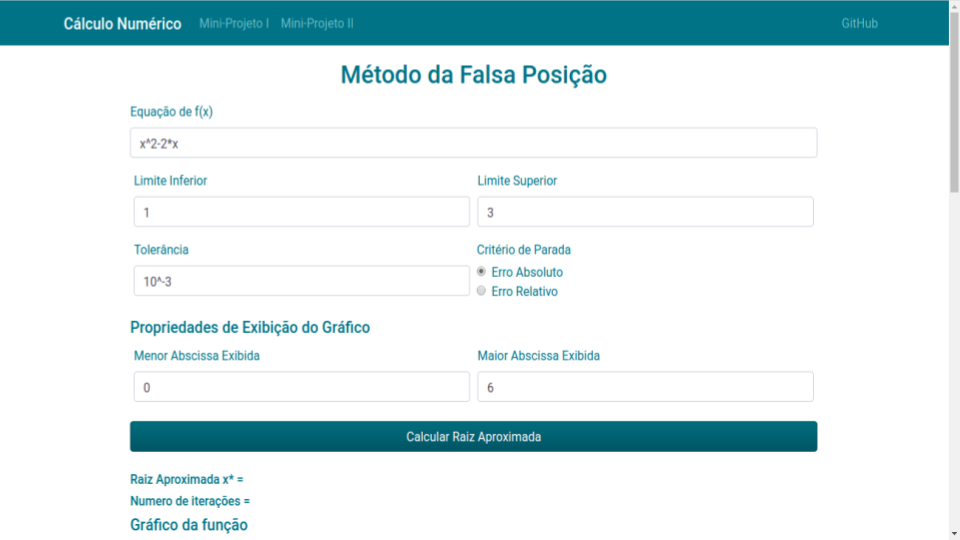
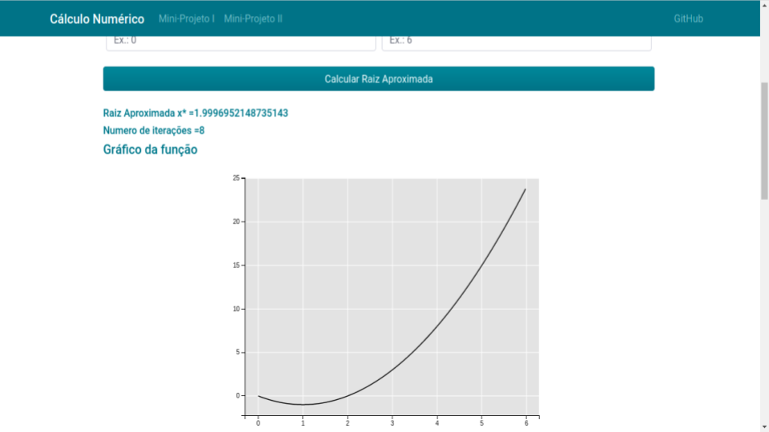

-
 Dungeon Scrolls
Dungeon Scrolls
-
Inventory Management System

Numerical Calculus
Source Code : Public
Project proposed by Professor Gustavo Peixoto to assist him in his discipline in teaching numerical calculus to computer students, in order to create interest for them, showing in this application the direct use of the methods taught in his class.
Contributions
In this project i was responsible for creating a Django server, capable of integrating python scripts for calculate roots of equations using numerical methods with html pages developed with help of Bootstrap.
Numerical Methods
Implementation of binomial methods of newton, muller, secant, false position, among others to find the roots of a function, and returning the result of the roots and the number of iterations made by the methods looking to converge on the correct result, from the equations considered and an initial estimate or interval[a,b].
Template Design
The structural definition of the pages were made using Bootstrap, open source web
framework for developing front end and interface components for websites and web
applications using HTML, CSS and JavaScript, providing various elements to be
used on our page, being customizable.


Dinamic Page with Django
Because of the heavy processing that some of the numerical methods require in its
iterations to convergence, we opted for the method of dynamically creating pages in
backend using a Django server and returning the page ready for user to view the
results of his request.


With the help of Jinja, the web template engine for Python we left key points in our
html statements so these parts could be dynamically constructed by the server from
the data passed by client when requesting a calculation with a method.